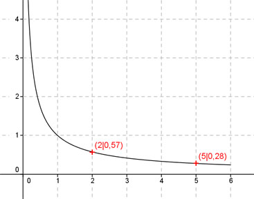

Aufgabe 60 Ergänzen Sie die Wertetabelle für den Graphen: y = x-0,8 x 2 5 y 0,57 0,28  f(x) = 0,57 eingesetzt : 0,57 = x-0,8 Logarithmieren: lg 0,57 = lg x-0,8 lg 0,57 = -0,8 * lg x | :(-0,8) lg 0,57 -0,2441 lgx = ---------- = ---------- = 0,305 --> -0,8 -0,8 x = 100,305 = 2 gerundet f(5) = 5-0,8 = 0,28 gerundet mit der xy - Funktion des Taschenrechners berechnet.